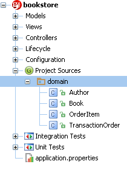
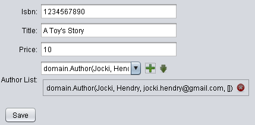

What is simple-jpa?
simple-jpa is a Griffon’s plugin for developing JPA and Swing based desktop application. The main goal of simple-jpa is to allow developer to concentrate on business logic. simple-jpa provides much functionality that is needed when working with JPA, therefore, frees developer from writing high-ceremony code.
simple-jpa is very useful for rapidly developing Swing-based database oriented desktop application. It can also be used for prototyping.
The following is a list of some of simple-jpa’s features:
Scaffolding – simple-jpa can generate an MVCGroup based on a domain class. This will speed up development.
Dynamic finders – simple-jpa injects dynamic finders to controllers (or services). With dynamic finders, developer can perform a query on JPA entities (or domain objects) quickly and easily. simple-jpa also supports the execution of JPA named query, JPQL and native SQL.
Transaction management – Unlike web-based applications, desktop applications do not require Java Transaction API (JTA). simple-jpa automatically provides and manages transaction for each method in controllers (can be configured by using annotation). By default, simple-jpa will share EntityManager across transaction in a way that is suitable for desktop application.
Bean Validation API (JSR-303) support – In the case of failed validation, simple-jpa will automatically present error messages in Swing-based view. Developer can also configure error notification and its behavior.
Common database application features – simple-jpa adds the following to all domain classes: an id (auto generated primary key), fields that store created time and last modified time (will be filled automatically), and a soft delete flag (soft delete is marking the object as inactive without deleting it from database).
Swing nodes for database application - simple-jpa provides template renderer for effortlessly represent domain object in JTable, JList or JComboBox. It also provides new nodes that can be used in Griffon’s view such as tagChooser, numberTextField, maskTextField, and dateTimePicker.
Integration testing – simple-jpa is using dbUnit in integration testing to fill database with predefined data from a Microsoft Excel file (or csv file). This way, every test cases will be executed with the same table data.
Manual
Bookstore Tutorial
This tutorial will assume that you are using the following software:
- Windows operating system
- Java Development Kit 7
- Griffon 1.2
- simple-jpa 0.4
- IntelliJ IDEA
- MySQL Server
The first step is creating a new Griffon application. You can do this by opening Command Prompt and entering the following commands:
mkdir c:\projects
cd c:\projects
griffon create-app bookstore
You can change c:\projects in the above commands to another directory. If that directory already exists, you can skip the ‘mkdir` command.
Griffon will create a subdirectory called bookstore that contains your project’s files, including source code. You will need to move to this directory by entering the following command:
cd bookstore
Next, you will install simple-jpa plugin by entering the following command:
griffon install-plugin simple-jpa 0.4
If simple-jpa has never been installed on your computer, Griffon will download required files for the first time. simple-jpa is a fat plugin with a lot of dependencies, so you may need to wait.
After simple-jpa has been downloaded and installed, the next step is integrating your project with IntelliJ IDEA by entering the following command:
griffon integrate-with -–idea
You can also replace --idea with --eclipse if you’re using Eclipse. In the above command, Griffon will create an IntelliJ IDEA project in your current directory. You can also create a new Griffon’s project in IntelliJ IDEA from the beginning, without using any command line as in this tutorial, but there is a drawback. If you create project and install simple-jpa from inside IntelliJ IDEA, dependencies for current project will not setup properly and autocomplete for project dependencies will not work.
You can start IntelliJ IDEA now. With IntelliJ IDEA running, select Open Project, browse to C:\projects\bookstore, and then click on OK button to open your project.
JPA application development usually starts with creating persistence.xml. This file will contain information required for database connection and JPA configurations. It will also contain a list of entities that will be managed by JPA.
The next most common thing to start with is creating database user and schema.
To keep things simple, you will use create-simple-jpa command. This command will generate persistence.xml for you. If you want it to also generate database schema and a new user, you will need to provide MySQL’s root password. Note that MySQL’s root password will not be saved and will not be used inside application.
In this step, you will create persistence.xml, a new database named bookstore and a database user steven (whose password is 12345). You will need to select Tools, Griffon, Run Target (or press Ctrl+Alt+G) and enter the following command:
create-simple-jpa --user=steven --password=12345 --database=bookstore --rootPassword=adminpassword

The command above is assuming that your root password is adminpassword. In some cases, your root password may be empty, so you will need to use the following command instead:
create-simple-jpa --user=steven --password=12345 --database=bookstore --rootPassword=
If you only want to generate persistence.xml without performing any database operations, you can use the following command instead:
create-simple-jpa --user=steven --password=12345 --database=bookstore --skipDatabase=true
The next step will be creating domain classes. Your bookstore application will have the following domain classes: TransactionOrder, OrderItem, Book, and Author. To create domain classes and add their location to persistence.xml, you will need to enter the following command:
create-domain-class TransactionOrder OrderItem Book Author
You will find all generated domain classes in the domain package. They are plain JPA entities that follow JPA rules.

Open TransactionOrder.groovy and add some members to this domain class:
package domain
import …
@DomainModel @Entity @Canonical
class TransactionOrder {
@NotEmpty @Size(min=5, max=5)
String orderNumber
@Type(type="org.jadira.usertype.dateandtime.joda.PersistentLocalDate")
LocalDate orderDate
@OneToMany(cascade = CascadeType.ALL, orphanRemoval = true , mappedBy="transactionOrder")
List<OrderItem> orderItemList = []
BigDecimal getAmount() {
orderItemList.sum { it.amount }
}
}
P.S.: If you didn’t add cascade and orphanRemoval to @OneToMany annotation, the code generated by scaffolding will not work. You’re also expected to initialize the Collection.
Open OrderItem.groovy and add some members to this domain class:
package domain
import ...
@DomainModel @Entity @Canonical (excludes = "transactionOrder")
class OrderItem {
@NotNull @ManyToOne
Book book
@NotNull @Min(1l)
Integer quantity
@ManyToOne
TransactionOrder transactionOrder
BigDecimal getAmount() {
book.price * quantity
}
}
Open Author.groovy and add some members to this domain class:
package domain
import ...
@DomainModel @Entity @Canonical (excludes = "bookList")
class Author {
@NotEmpty @Size(min=2, max=100)
String firstName
@Size(min=2, max=100)
String lastName
@Email
String email
@ManyToMany(mappedBy="authorList")
List<Book> bookList
}
Open Book.groovy and add some members to this domain class:
package domain
import ...
@DomainModel @Entity @Canonical
class Book {
@NotEmpty @Size(min=9, max=13)
String isbn
@NotEmpty @Size(min=2, max=100)
String title
@NotNull @Min(1l)
BigDecimal price
@NotEmpty @ManyToMany
List<Author> authorList
}
Your next step will be generating Griffon’s MVCGroups based on your domain classes. To do this, enter the following command:
generate-all * --startupGroup=MainGroup
simple-jpa will create one MVCGroup per domain class. Each MVCGroup has model, view and controller that are capable of performing create, read, update and delete operation.
The above command will also generate one special MVCGroup named MainGroup which is a startup group. This MVCGroup will act as a main window that provides button to launch other MVCGroups.
By default, generate-all will not replace existing files. If you really want to overwrite existing files, you can use the following command instead:
generate-all * --startupGroup=MainGroup --force-overwrite
Up to this point, you already have a working bookstore application. You don’t need to worry about creating database tables because simple-jpa has added hibernate.hbm2ddl.auto to persistence.xml. This configuration will instruct Hibernate JPA to automatically create tables for domain classes in application startup.
You can start your application by entering the following command:
run-app
The startup group’s view contains buttons that link to the others.
P.S.: Every time you start your application, data in tables will be discarded. You will need to remove hibernate.hbm2dll.auto in persistence.xml if you want to preserve data in your tables.
One of simple-jpa’s nice features is that it knows about your domain classes’ relationship. simple-jpa will generate a special MVCGroup if it finds one-to-one and one-to-many relationship. For example, if you open Transaction Order view, you will find an Order Item List button. This is an example of one-to-many relationship. If you click on the button, a dialog to input one or more OrderItem will be displayed.
If you have examined the startup group clearly, you will find that there is an Order Item menu in your startup group. This is usually undesirable, because, user will always open Order Item view from Transaction Order view. You can remove it by opening MainGroupView.groovy, deleting line 12 and 27 as shown below:
actions {
…
action(id: 'orderItem', name: 'Order Item', actionCommandKey: 'orderItem', closure: controller.switchPage)
…
}
toolBar(constraints: BorderLayout.PAGE_START, floatable: false) {
…
button(action: orderItem, verticalTextPosition: SwingConstants.BOTTOM, horizontalTextPosition: SwingConstants.CENTER)
…
}
Your bookstore application will perform validation based on the annotations in domain classes. For example, firstName in Author class has @NotEmpty annotation. If user didn’t input author’s first name when entering new data, your application will display an error message.
If user input a new Book, he will need to choose authors (one or more) from simple-jpa’s tagChooser. By default, simple-jpa will use tagChooser if it encounters many-to-many relationship. tagChooser will display String version of domain object which is obtained by calling toString(). This is often seen as undesirable.

You can use template renderer to represent domain object in more informative text. For example, open BookView.groovy and change line 53 to the following:
tagChooser(model: model.authorList, templateString: '${value.firstName} - ${value.lastName}',
constraints: 'grow,push,span,wrap', errorPath: 'authorList')
In the code above, you’re using simple-jpa’s template renderer to display Author’s first name and last name in tagChooser. Template renderer can accept any valid Groovy expression.
You can also use template renderer in table. For example, in the picture above, the fourth column (author list) is hard to read. Open BookView.groovy and change line 36 to the following:
columnValues: ['${value.isbn}', '${value.title}', '${value.price}',
'<% out << value.authorList.collect{ "${it.firstName} - ${it.lastName}"}.join(", ") %>'])
The expression above will display a comma separated list of authors for each book.
If you are displaying number or money amount in template renderer, you can also use simple-jpa’s formatter functions such as numberFormat() or currencyFormat(). For example, open TransactionOrderView.groovy and change line 36 to the following:
columnValues: ['${value.orderNumber}', '${value.orderDate}',
'${value.orderItemList.size()} items, Total ${currencyFormat(value.amount)}'])